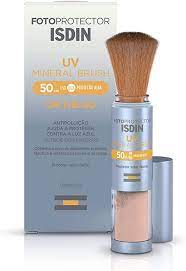

SOLVENTES
Àgua – Nomeada "Aqua" pela International Nomenclaturea, precisa ser estéril (livre de microrganismos), não deve conter cálcio ou metais pesados ou outros minerais indesejados.
Álcool – É um solvente que permite a rápida absorção de componentes do protetor solar, além de ser agente antimicrobiano, agente antiespuma e de controle da viscosidade do cosmético.
Álcool benzílico – Solvente para diferentes componentes do perfume do cosmético.
QUÍMICOS (ORGÂNICOS)
Octocrileno (10%) – Age como filtro UVB e tem pouca proteção UVA
.Butil metoxidibenzoilmetano (Avobenzona) (5%) – É um filtro UVA fotoinstável e sempre deve ser associado com o octocrileno para que seja estabilizado.
Ácido fenil benzimidazol sulfônico (Neo Heliopan Hidro; Ensulizol) (8%) – Filtro UVB e pouca proteção UVA. Hidrossolúvel, deixa o cosmético menos oleoso.
Homosalato (15%) – Filtro UVB.
Salicilato de etilexil (Octinosalato) (5%) – Filtro UVB.
Bis-etilexiloxifenol metoxifenil triazina (BEMT, bematrizinol) (10%) – Filtro UVA e UVB. Fotoestável e estabiliza a avobenzona.
DHHB (Dietilamino hidroxibenzoil exil benzoato) (10%) – Filtro UVA de longo espectro (320-400 nm), fotoestável (não é permitido nos EUA).
Mexoryl SO (Camphor benzalkonium methosulfate, CBM) – Filtro UVB.
Meroxyl SX – Filtro UVA, fotoestável./p>
FILTROS FÍSICOS (MINERAIS, INORGÂNICOS).
.jpeg)
Dióxido de titânio – Filtro físico contra UVB. Absorve pouco UVA.
Óxido de zinco – Filtro UVB e UVA de amplo espectro.
Octocrileno (10%) – Age como filtro UVB e tem pouca proteção UVA.
metoxidibenzoilmetano (Avobenzona) (5%) – É um filtro UVA fotoinstável e sempre deve ser associado com o octocrileno para que seja estabilizado.Ácido fenil benzimidazol sulfônico (Neo Heliopan Hidro; Ensulizol) (8%) – Filtro UVB e pouca proteção UVA. Hidrossolúvel, deixa o cosmético menos oleoso.
Homosalato (15%) – Filtro UVB.
Salicilato de etilexil (Octinosalato) (5%) – Filtro UVB.
Bis-etilexiloxifenol metoxifenil triazina (BEMT, bematrizinol) (10%) – Filtro UVA e UVB. Fotoestável e estabiliza a avobenzona.
DHHB (Dietilamino hidroxibenzoil exil benzoato) (10%) – Filtro UVA de longo espectro (320-400 nm), fotoestável (não é permitido nos EUA).
Mexoryl SO (Camphor benzalkonium methosulfate, CBM) – Filtro UVB.
Meroxyl SX – Filtro UVA, fotoestável.